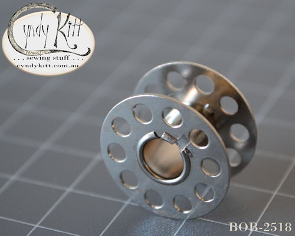

Despite being most associated with the Singer 15 class, there is evidence that "central bobbin" oscillating hook shuttle for lock stitch system was most likely developed by a German manufacturer in the late 1880s.
There is evidence that the Singer Manufacturing Co stole the design for a fingered bobbin case vertical oscillating shuttle from Dürkopp in the 1880s but other than some unverifiable references to a drawn out patent case concrete records are rather murky on the matter. Whatever the truth of the matter, it does appear that the shuttle system was treated at public domain by the first decade of the 20th century with most German sewing machine manufacturers producing models using the shuttle, commonly referred to as a Central Bobbin or CB, for domestic and commercial use by 1910.
The #2581 and #2996 bobbins are suitable for all central bobbin models, the non-Singer central bobbins with the exception of the Soviet Union made machines all require 1 o'clock shuttle
Singer also used the shuttle system for commercial and industrial use models, along with the 16 there was the 31 (albeit with a slightly different bobbin case) and several industrial use 15 class models.


The Singer 15K26 and 15K80
and all non-Singer CB models use a 1 o'clock case
The Singer 15K88 through to 15K90
require an 11 o'clock case

Bobbin Case for straight stitch "central bobbin" oscillating
hook machines
(1 o'clock, Singer part # 15277)
Currently not available from my suppliers
Please order either of the following cases
BCD-15GH
BCD-HZ11

